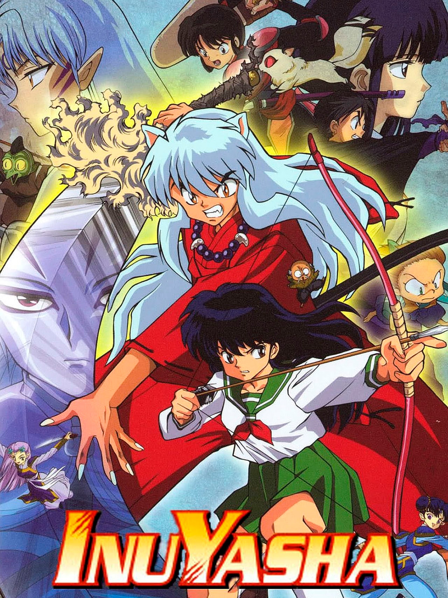

Imagem de Abertura de Inuyasha
História de Inuyasha
InuYasha ,é um mangá e anime japonês criado por Rumiko Takahashi. Seus personagens principais são e Kagome Higurashi(a qual teve seu nome mudado na dublagem brasileira para Agome, enquanto que na edição brasileira do mangá o nome original foi conservado).O anime foi exibido de 16 de Outubro de 2000 a 13 de Setembro de 2004 no Japão. No Brasil a série primeiro teve seu mangá publicado em meados de 2002 pela Editora JBC e depois no final do mesmo ano o Cartoon Network trouxe a série animada. No Brasil, a série foi apresentada pela Rede Bandeirantes e também exibida pela Rede Globo, porém essa exibição não durou muito, além de ter problemas na justiça. Ainda se tratando da exibição em território brasileiro, por causa de problemas com o estúdio de dublação Parisi Vídeo, o animê teve sua exibição cancelada antes do término das dublagens, sendo assim, não existem os últimos 7 episódios dublados em português do Brasil. O anime foi reprisado de janeiro até outubro de 2007 no Cartoon Network, de segundas às quintas, às 2h05 até 2h30 da madrugada, no horário de Brasília. A Séria Animada foi eleita no japão o anime com a melhor trilha sonora de todos os tempos estando acompanhada por grandes nomes como Mobile Suit Gundam Seed entre outros.